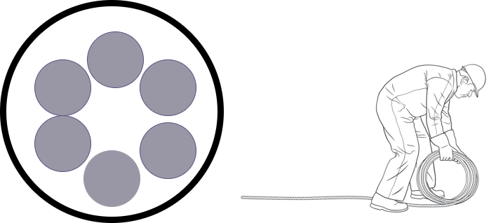
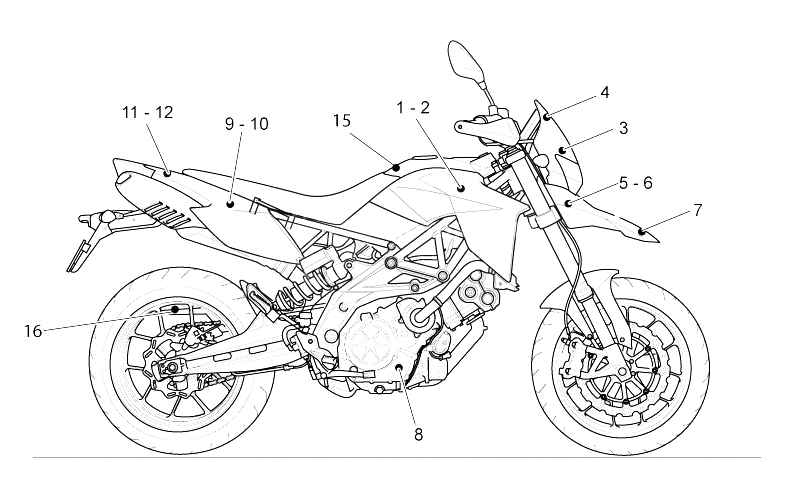

Una de las principales caracteristicas de una variable aleatoria es su función de probabilidad \(f(x)\), la cual determina su valor esperado, varianza y además permite calcular tanto probabilidades puntuales en el caso de las varables discretas como tambien probabilidades en intervalos tanto para variables aleatorias discretas como para variables continuas.
Es posible emplear los modelos de probabilidad para simular variables aleatorias asociadas situaciones reales utilizando para ello funciones que generan números aleatorios que se puedan asociar a una determinada distribución de probabilidad.
Los siguientes problemas requieren de los conceptos de probabilidad y variable aleatoria, revisados en la Unidad 2 del curso. Siguiendo los pasos descritos podrás dar solución a los interrogantes planteados.
Un cable está compuesto por seis alambres. La fuerza de ruptura de cada alambre es una variable aleatoria distribuida normalmente con media de \(10 kN\) y desviación estándar de \(1 kN\) (Un \(kN\)$ = \(kiloNewton\) = \(10^{3} N\)). Utilizando el método de cable quebradizo, se estima que la fuerza del cable es igual a la fuerza de alambre más frágil multiplicada por el número de alambres.

cable=data.frame(
a1 = rnorm(1000, 10,1),
a2= rnorm(1000, 10,1),
a3= rnorm(1000, 10,1),
a4= rnorm(1000, 10,1),
a5= rnorm(1000, 10,1),
a6= rnorm(1000, 10,1))
fuerza=apply(cable,1,min)*6
hist(fuerza)cat("Media de la fuerza de resistencia : ", mean(fuerza), "\n")cat("Desviación estandar de la fuerza de resistencia : ",sd(fuerza), "\n")probRes=sum(as.numeric(fuerza>60))/1000
cat("P(X > 60) = ",probRes, "\n")Victor distribuye partes para motocicletas, y se estima que cada una de ellas tiene una probabilidad de \(0.03\) de estar defectuosa. José tambien distribuye partes semejantes y su producto tiene una probabilidad de \(0.05\) de estar defectuoso. Usted recibe un envío de \(100\) partes procedente de cada vendedor (Victor y José).

data=data.frame(
X=rbinom(1000,100,0.03),
Y=rbinom(1000,100,0.05))
defectuosas=apply(data, 1,sum)
hist(defectuosas)
plot(density(defectuosas))Genere muestras simuladas de tamaño \(1000\) a partir de las distribuciones de \(X\) y \(Y\).
Utilice las muestras para estimar la probabilidad de que el número total de partes defectuosas sea menor a diez.
Utilice las muestras para estimar la probabilidad de que el envío de Victor tiene más partes defectuosas que el envío de José.
Construya una gráfica de probabilidad normal para el número total de partes defectuosas. ¿La cantidad sigue una distribución normal?
Realice un informe con los resultados obtenidos
Ejercicios tomados de Navidi(2006)
x =data.frame(x1= 1:20, x2=21:40) ;
apply(x,1,mean) ; apply(x,2,mean) .as.numeric(c("1.2", "2.5", "3.9")). Tambien puede ser
utilizada para la construcción de vector de ceros y unos. Coloca uno
cuando se cumple una condición y ceros cuando no se cumple. Ej.:
x= 1:20 as.numeric(x > 10).boxplot(x) .cat("Media de la edad", mean(x)).plot(density(x)).summarytools::descr(x).summarytools::freq(x) .hist(x) .max(x) .mean(x) .median(x) .min(x) .plot(x,y) .sd(x)
.sum(1:100) .table(x)
.var(x) .